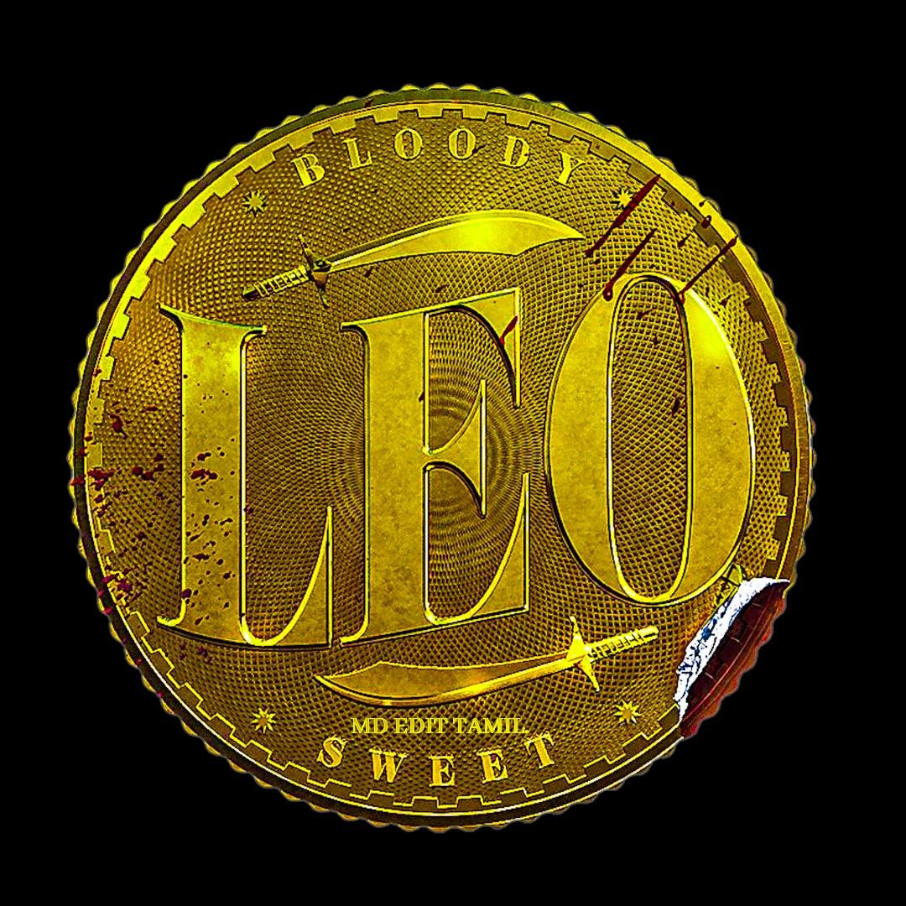
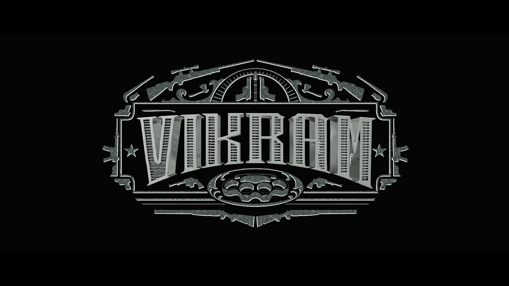
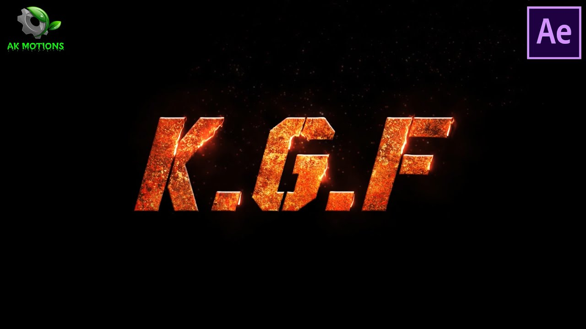
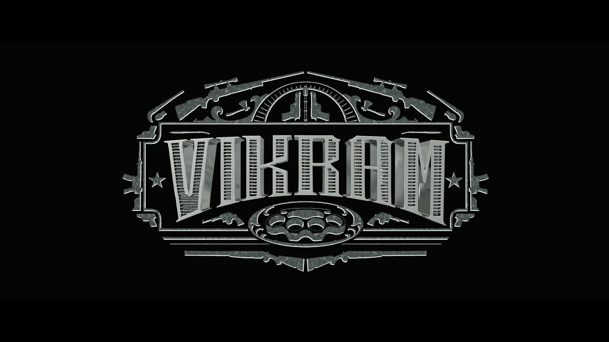
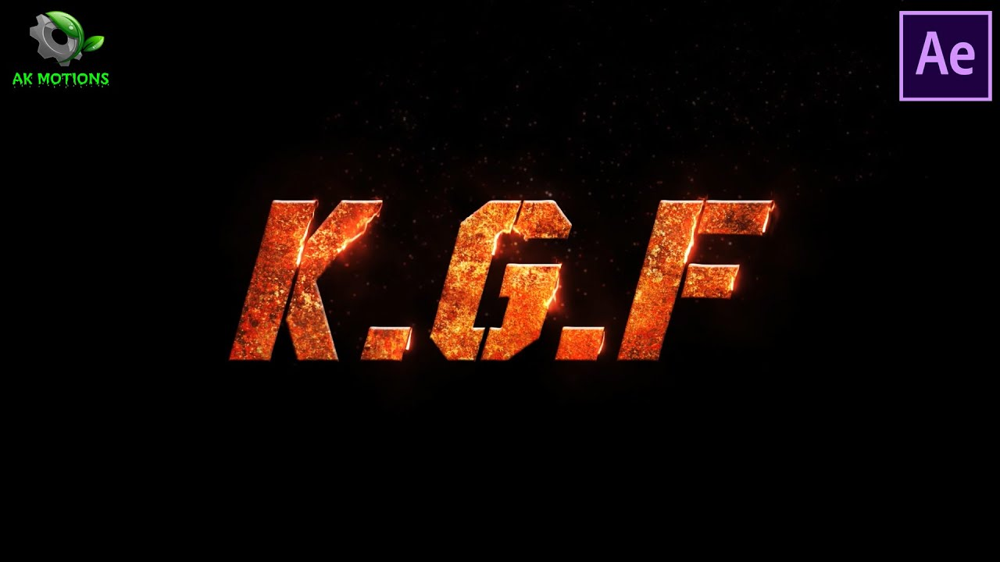

The history of film chronicles the development of a visual art form created using film technologies that began in the late 19th century. The advent of film as an artistic medium is not clearly defined. However, the commercial, public screening of ten of the Lumière brothers' short films in Paris on 28 December 1895, can be regarded as the breakthrough of projected cinematographic motion pictures. There had been earlier cinematographic results and screenings by others, like the Skladanowsky brothers, who used their self-made Bioscop to display the first moving picture show to a paying audience on 1 November 1895, in Berlin, but they had neither the quality, financial backing, stamina, or luck to find the momentum that propelled the cinématographe Lumière into worldwide success. Those earliest films were in black and white, under a minute long, without recorded sound, and consisted of a single shot from a steady camera. The first decade of motion pictures saw film move from a novelty to an established mass entertainment industry, with film production companies and studios established all over the world. Conventions toward a general cinematic language also developed, with editing camera movements and other cinematic techniques contributing specific roles in the narrative of films. Popular new media, including television (mainstream since the 1950s), home video (mainstream since the 1980s), and the internet (mainstream since the 1990s), influenced the distribution and consumption of films. Film production usually responded with content to fit the new media, and with technical innovations (including widescreen (mainstream since the 1950s), 3D, and 4D film) and more spectacular films to keep theatrical screenings attractive. Systems that were cheaper and more easily handled (including 8mm film, video, and smartphone cameras) allowed for an increasing number of people to create films of varying qualities, for any purpose (including home movies and video art). The technical quality was usually lower than that of professional movies, but improved with digital video and affordable, high-quality digital cameras. Improving over time, digital production methods became more and more popular during the 1990s, resulting in increasingly realistic visual effects and popular feature-length computer animations. Various film genres emerged and enjoyed variable degrees of success over time, with huge differences among, for instance, horror. At this time, studios were blacked out to allow shooting to be unaffected by changing sunlight. This was replaced with floodlights and spotlights. The widespread adoption of irising-in and out to begin and end scenes caught on in this period. This is the revelation of a film shot in a circular mask, which gradually gets larger until it expands beyond the frame. Other shaped slits were used, including vertical and diagonal apertures. A new idea taken over from still photography was "soft focus". This began in 1915, with some shots being intentionally thrown out of focus for expressive effect, as in Mary Pickford starrer Fanchon the Cricket. It was during this period that camera effects intended to convey the subjective feelings of characters in a film really began to be established. These could now be done as Point of View (POV) shots, as in Sidney Drew's The Story of the Glove (1915), where a wobbly hand-held shot of a door and its keyhole represents the POV of a drunken man. The use of anamorphic (in the general sense of distorted shape) images first appears in these years when Abel Gance directed la Folie du Docteur Tube (The Madness of Dr. Tube). In this film the effect of a drug administered to a group of people was suggested by shooting the scenes reflected in a distorting mirror of the fair-ground type. Symbolic effects taken over from conventional literary and artistic tradition continued to make some appearances in films during these years. In D. W. Griffith's The Avenging Conscience (1914), the title "The birth of the evil thought" precedes a series of three shots of the protagonist looking at a spider, and ants eating an insect. Symbolist art and literature from the turn of the century also had a more general effect on a small number of films made in Italy and Russia. The supine acceptance of death resulting from passion and forbidden longings was a major feature of this art, and states of delirium dwelt on at length were important as well.
MOVIE LIST
Click on the title to see full details about the movies :
 


